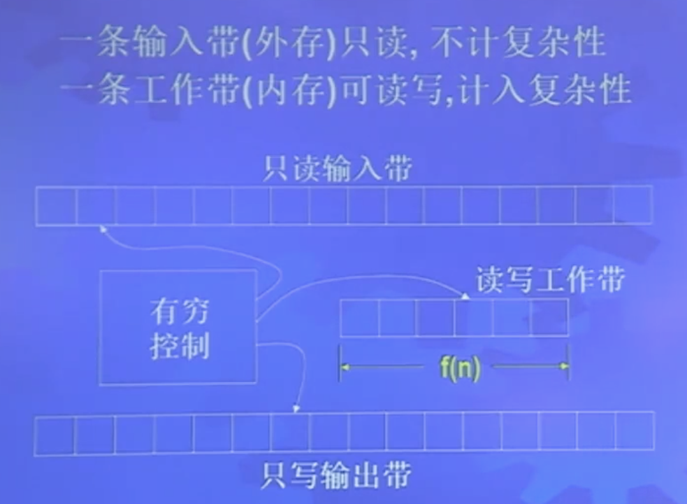
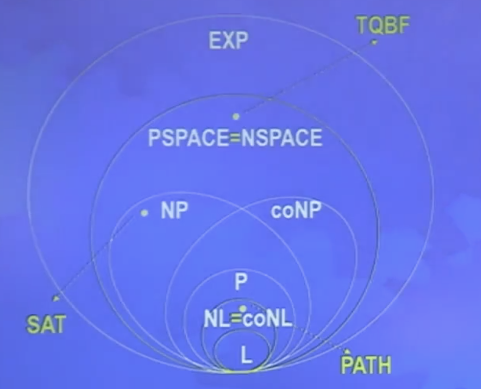

DTM 的空间复杂性：在长度为 n 的输入上最多扫描 f(n) 个不同带方格，则 M 的空间复杂度为 f(h)。
NTM 的空间复杂性：在所有分支停机，在任何计算分支上最多扫描 f(n) 个不同带方格，则 M 的空间复杂性是 f(n).
可满足性问题：SAT={<ϕ>∣ϕ是可满足布尔公式},SAT∈SPACE(O(n))
ALLNFA={<M>∣L(M)=Σ∗},ALLNFA∈NSPACE(O(n))
Savitch 定理：NSPACE(f(n))⊆SPACE(f2(n)),f(n)≥n。因此有：NPSPACE=PSPACE
思路：NSPACE(f(n))⊆NTIME(2O(f(n))
可产生性问题：CANYIELD={<M,c1,c2,t>∣机器 M 的格局 c1 能在 t 步内到达格局 c2}
思路：折半划分，递归计算。
证明：最多有 2df(n) 个格局，计算最坏情况。递归过程需要 log2(f(n))=O(f(n)) 层，每层需要栈空间 O(f(n))，总空间 O(f2(n))
Savitch 定理证明：对于一个 NSPACE(f(n)) 的问题，将问题转为 CANYIELD(cstart,caccept,2df(n))，这个问题只需要 O(f2(n)) 空间解决，因此 NSPACE(f(n))⊆SPACE(f2(n))
PSPACE 类
PSPACE=⋃kSPACE(nk)
PSPACE=NSPACE
NPSPACE=⋃kNSPACE(nk)
NSPACE(nk)⊆SPACE(n2k)
全带量词布尔公式问题：TQBF={<ϕ>∣ϕ是真的 tqbf}
定理9.8：TQBF∈PSPACE
思路；递归过程，深度等于变量个数所以总空间 O(m)
亚线性空间
一条只读输入带，一条工作带。

例9.14：PATH∈NL
对数空间格局：c 个状态，g 个带符号，不同格局有 cnf(n)gf(n)=n2O(f(n))，每个格局长度为 logn+O(f(n))，当 f(n) 为对数时，格局数为多项式。因此有 L⊆NL⊆P
NL = coNL
定理9.22：NL=coNL
思路：证明 PATH∈NL，c 是从 s 可达的顶点数，找出 c 个顶点，每个顶点都不包含 t。重点在 NL 中计算 c。
NSPACE(f(n))⊆SPACE(f2(n)),f(n)≥logn
NSPACE(f(n))=coNSPACE(f(n)),f(n)≥logn
